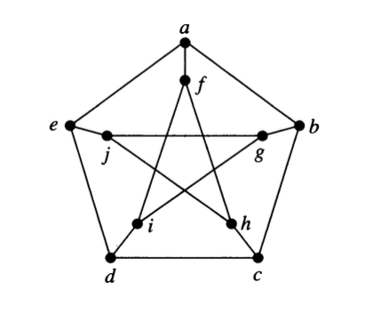

7 Planar and Non-planar Graphs
A graph is a planar graph if it can be drawn in the plane with no edge crossings. [Note: You may need to rearrange the vertices and edges to avoid crossings.]
7.1 Euler and Planarity
We have already seen Euler’s Formula for Planar Graphs:
\[v - e + r = 1 + \mbox{number of connected components} \;,\] where \(v\) is the number of vertices, \(e\) the number of edges and \(r\) the number of regions.
In particular, for a connected graph we have \(v - e + r = 2\).
Show that the following are planar.
- \(K_{2,2}\)
- \(K_{2,3}\)
- \(K_{2,4}\)
Is \(K_{2,n}\) planar for every \(n\)?
Use Euler’s formula to show that \(K_5\) is not planar.
- How many vertices does \(K_5\) have?
- How many edges does \(K_5\) have?
- If \(K_5\) were planar, how many regions would it have?
- Show that \(K_5\) can’t have that number of regions, so it must not be planar.
Use Euler’s formula to show that \(K_{3,3}\) is not planar.
7.2 Kuratowski’s Theorem
The proof of the following theorem is too involved for this course, but it turns out that all nonplanar graphs contain a “homeomorphic copy” of either \(K_{5}\) or \(K_{3,3}\).
Kuratowski’s Theoerm: A graph \(G\) is nonplanar if and only if it contains a subgraph \(H\) that is homeomorphic to either \(K_5\) or \(K_{3,3}\).
an elementary subdivision of a graph \(G\) removes one edge \((u, v)\) and adds a new vertex \(n\) and two new edges \((u,n)\) and \((v,n)\).
a subdivision of a graph \(G\) is the result of performing 0 or more elementary subdivisions, starting from \(G\).
two graphs are homeomorphic if some subdivision of one is isomorphic to some subdivision of the other.
Create a graph with 5 vertices and 7 edges. Now perform three elementary subdivisions on your graph.
Describe what an elementary subdivision is in simple words a kindergarterner could understand.
Explain why two homeomorphic graphs are either both planar or both nonplanar.
Use Kuratowski’s Theorem to show that the Petersen graph is nonplanar.
Here’s one way you can go about it. You may find it helpful to see if you can find the subgraph of the Petersen graph that will be homeomorphic to \(K_5\) or \(K_{3,3}\) before you start this process. (Ask yourself which vertices will correspond to the vertices in \(K_5\) or \(K_{3,3}\)? Which will be introduced by subdivision? Which vertices or edges will you remove to get your subgraph?)
Start with either \(K_5\) or \(K_{3,3}\). (This might only work for one and not for the other, so give some thought to which one you choose.)
Perform some elementary subdivision on your selected graph.
Show that your subdivision is isomorphic to a subgraph of the Petersen graph.

- Show that the Petersen graph is not planar without using Kuratowski’s Theorem.